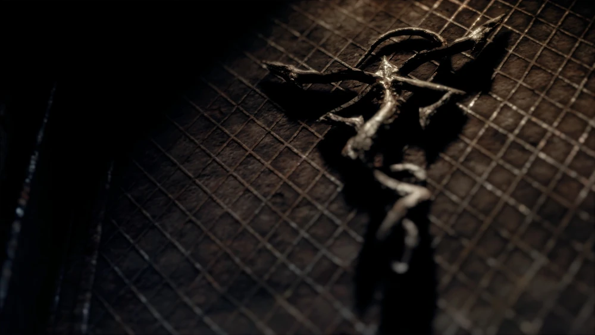

Resident Evil 4 Remake: Deep Lore & Review
Resident Evil 4 Remake bukan cuma sekadar peningkatan grafis dari versi legendaris tahun 2005-nya. Capcom bener-bener ngerombak atmosfer game ini jadi jauh lebih gelap, serius, dan mengerikan. Karakter Leon S. Kennedy di sini kerasa banget punya trauma mendalam dari insiden Raccoon City, bikin petualangannya menyelamatkan Ashley Graham kerasa lebih emosional dan penuh beban.

The Deep Lore: Sekte Los Illuminados & Las Plagas
Yang paling seru buat dibedah di versi Remake ini adalah penyampaian cerita seputar parasit Las Plagas dan sekte kuno Los Illuminados yang dipimpin oleh Osmund Saddler. Melalui dokumen-dokumen rahasia (files) yang tersebar di sepanjang game, lore-nya jadi jauh lebih masuk akal dan menyeramkan:
- Koneksi Historis: Parasit Las Plagas ternyata udah dikubur berabad-abad yang lalu di bawah kastil oleh keluarga Salazar pertama yang menyadari bahayanya. Namun, Ramón Salazar yang rapuh secara mental berhasil dimanipulasi oleh Saddler untuk menggali kembali parasit tersebut demi kejayaan sekte.
- Spesies Parasit yang Berbeda: Di versi ini, dijelaskan lebih detail kalau parasit yang disuntikkan ke warga desa (Ganados) berbeda tingkatannya dengan yang ada di tubuh para petinggi seperti Bitores Méndez atau Ramón Salazar. Mereka yang punya Plagas dominan bisa mempertahankan kesadaran dan mengendalikan orang lain.
- Ritual yang Lebih Kelam: Atmosfer desa dan kastil dibuat jauh lebih religius sekaligus sinting. Capcom sukses nampilin kalau para korban nggak cuma jadi zombi bodoh, tapi mereka adalah manusia yang kesadarannya direnggut paksa dan dipaksa tunduk pada satu suara pikiran kolektif (Hive Mind) milik Saddler.
"Di versi Remake, nuansa gothic horror di kastil Salazar bener-bener dapet banget. Setiap sudut kerasa mencekam dan ngasih petunjuk kalau sekte ini udah merusak moral seluruh penduduk wilayah tersebut."

🎮 Gaming Experience: Apa yang Bikin Seru?
Dari segi gameplay, transisinya bener-bener dapet nilai sempurna. Ini beberapa mekanik baru yang bikin pengalaman mainnya super menegangkan:
- Parry System dengan Pisau: Ini mekanik paling juara! Lo bisa menangkis serangan gergaji mesin Dr. Salvador atau tebasan kapak pakai pisau Leon. Tapi hati-hati, pisaunya punya sistem durability yang bisa hancur kalau keseringan dipakai.
- Mekanik Stealth: Sekarang Leon bisa jongkok dan mengendap-endap buat menusuk musuh dari belakang secara diam-diam. Fitur ini ngebantu banget buat menghemat peluru pas ketemu musuh buta yang mengerikan kayak Garrador.
- Ashley yang Lebih Berguna: Di sini Ashley gak punya bar darah, melainkan status "incapacitated" kalau kena hit. Dia gak lagi kerasa beban, melainkan bener-bener jadi partner yang bikin kita harus pinter-pinter ngatur strategi posisi pas lagi surrounded.
⭐ Kesimpulan Akhir
RE4 Remake adalah mahakarya yang wajib ditamatin berulang kali (apalagi buat berburu pangkat S+ atau senjata tak terbatas di New Game Plus!). Capcom berhasil mempertahankan akar aksi yang seru tanpa menghilangkan elemen horornya yang bikin merinding, meskipun begitu puzzle di game ini sangatlah bikin sakit kepala hahaha. Skor dari gue: 8,5/10!
← Kembali ke Game Corner